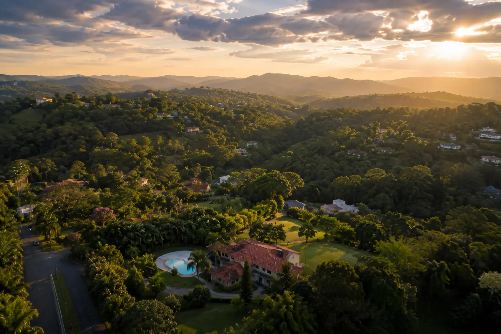

Uma cidade que cresce rapidamente, com natureza preservada, propriedades amplas e um custo-benefício que poucos municípios da Grande SP conseguem oferecer para o cuidado ao idoso.

Vargem Grande Paulista não é mais um nome de mapa que poucas pessoas conhecem. Nas últimas décadas, o município cresceu de forma consistente e acelerada — impulsionado pela migração de famílias que buscam qualidade de vida fora da pressão da metrópole, sem abrir mão da proximidade estratégica com São Paulo.
Segundo dados do IBGE, o município registrava cerca de 42 mil habitantes no final da década de 2010. Projeções recentes apontam para uma população próxima de 65 mil habitantes em 2026 — um crescimento expressivo para um município desse porte, em um período relativamente curto.
Esse crescimento traz consigo uma realidade que poucas famílias ainda perceberam com clareza: à medida que a população envelhece e a demanda por cuidado aumenta, VGP tornou-se um terreno fértil para residenciais sênior que conseguem oferecer o que os grandes centros urbanos raramente permitem — espaço real, natureza e tranquilidade.
Há atributos que pesquisas sobre bem-estar geriátrico associam consistentemente à qualidade de vida no envelhecimento — e Vargem Grande Paulista reúne boa parte deles de forma natural.
Vegetação nativa, ar limpo e contato com verde — elementos que estudos geriátricos associam a menor nível de estresse e melhor qualidade de sono.
O ritmo de vida em VGP é consideravelmente mais lento do que em centros urbanos — um benefício real para o bem-estar de pessoas idosas, especialmente aquelas com demência leve a moderada.
O custo do metro quadrado permite residenciais com jardins generosos, varandas, área de caminhada e espaço real para atividades ao ar livre — impossíveis no mesmo orçamento em SP.
Um dado que a neurologia geriátrica destaca: pessoas idosas com comprometimento cognitivo leve tendem a apresentar menos episódios de agitação e melhor qualidade de sono em ambientes com menos estímulos sonoros e mais contato com natureza. VGP oferece esse ambiente de forma natural.
É natural que famílias iniciem a busca por um residencial priorizando a proximidade. A lógica é emocional — e completamente compreensível. Mas, com o tempo, muitas famílias percebem uma virada importante na forma como enxergam essa escolha.
Vargem Grande Paulista está localizada próximo ao km 39 da Rodovia Raposo Tavares — com acesso relativamente fluido para famílias vindas da Zona Sul, Cotia, Embu das Artes e municípios do interior. O trânsito, comparado aos eixos centrais de São Paulo, é significativamente menor.
Quando as visitas passam a ser momentos planejados — e não deslocamentos de emergência — a distância se torna um fator secundário. O que permanece como critério principal é a qualidade do cuidado no tempo entre as visitas.
A SAFE ILPIS aborda esse tema com mais profundidade em outro artigo do blog, onde discutimos o que realmente define a qualidade de um residencial sênior — além da localização.
O que as famílias de VGP relatam: a maioria que inicialmente resistiu à distância afirma, após alguns meses, que a qualidade do ambiente e do cuidado compensou amplamente. As visitas se tornaram passeios ao invés de obrigações — e isso mudou a experiência de toda a família.
"Em Vargem Grande Paulista, R$ 7.000 por mês podem entregar uma estrutura que custaria R$ 15.000 ou mais em São Paulo.— Equipe SAFE ILPIS
A diferença não é o preço — é o espaço que o dinheiro consegue comprar."
A maioria das residências qualificadas em Vargem Grande Paulista opera na faixa entre R$ 5.000 e R$ 7.000 mensais — o que é coerente com os custos operacionais reais de uma ILPI regularizada. A diferença está no que esse valor consegue entregar nessa região.
Bairros nobres da Zona Oeste ou Sul
Com estrutura qualificada e espaço real
Importante: preços mais acessíveis em VGP não significam menor qualidade de cuidado. Significam que o mesmo custo operacional resulta em muito mais espaço físico — o que, para o bem-estar do idoso, faz toda a diferença.
Antes de qualquer indicação, a SAFE ILPIS realiza uma análise técnica completa — visitando cada residência, verificando documentação e avaliando a qualidade real do cuidado. Isso é o que encontramos em VGP:
Esse foi o resultado da verificação presencial e documental da SAFE ILPIS na região — com consulta à Vigilância Sanitária e avaliação da qualidade operacional real de cada estabelecimento.
Nossas 4 parceiras em VGP mantêm parceria ativa há mais de 4 anos, com diversas hospedagens bem-sucedidas ao longo desse período — um histórico que poucas regiões conseguem apresentar.
Em uma região com alta incidência de operações irregulares — quase 60% das residências identificadas apresentou algum problema — o trabalho de verificação da SAFE ILPIS representa uma proteção real para as famílias que não têm tempo ou referências para fazer esse mapeamento sozinhas.
Alvará ativo, CNPJ regular, notificação Anvisa e responsável técnico registrado.
Avaliada presencialmente — não por fotos. Acessibilidade, segurança e ambiente verificados in loco.
Número real de cuidadoras em todos os turnos — incluindo noturno e fins de semana.
Protocolo documentado, equipe treinada e acesso real a hospital de referência.
Política de visitas abertas, comunicação ativa com as famílias e documentação acessível.
Operação financeiramente viável — o modelo é coerente com o custo real de operar uma ILPI.
A SAFE ILPIS tem 4 parceiras em VGP — credenciadas há mais de 4 anos, com histórico de hospedagens bem-sucedidas. Ajudamos a encontrar a certa para o perfil do seu familiar.
✓ Sem compromisso · ✓ No seu tempo · ✓ 100% gratuito para famílias
A SAFE ILPIS já fez o trabalho de campo por você. Fale com nossa equipe — de graça, sem pressão e no seu tempo.
Ver opções em VGP — grátis